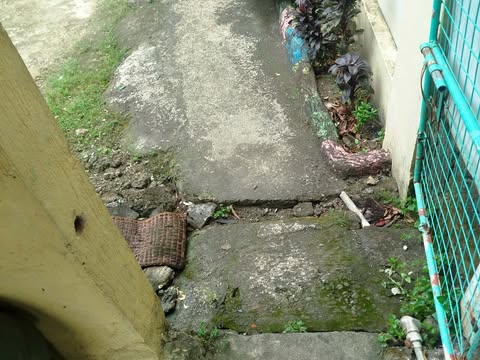
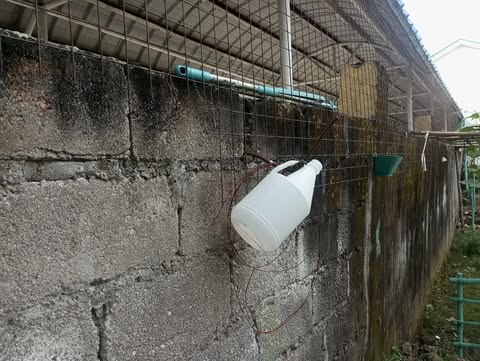
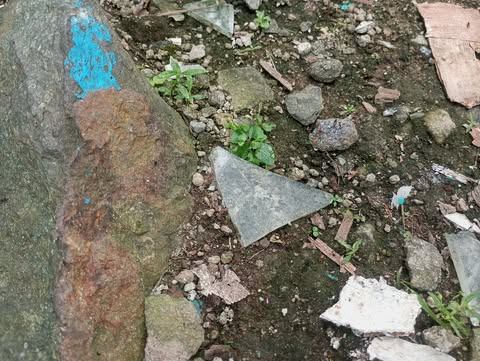
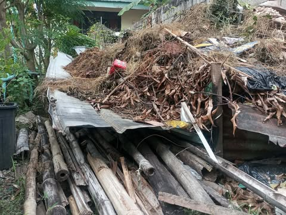
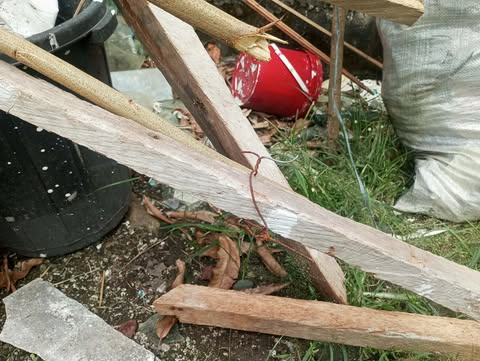

Garden
Green Moss

Green moss grows on the damp parts. When it’s wet from rain (which happens often here), the surface gets
super slippery. Students might lose their balance and slip, especially if they’re carrying heavy bags or
rushing to class.
Rusty Wires

The wire holding the jug is rusty and sticking out in places. Students might brush against it when passing –
especially if they’re walking in groups and the path gets crowded. Rusty metal can cut skin easily, and cuts
from rusty things might even get infected.
Debris

Small stones and bits of debris are all over the place. When students play or hurry to class, they can trip
over these things. Tripping could make them fall onto the sharp glass or hard rocks, causing more injuries.
Trash Pile

The piled-up leaves and trash are perfect places for mosquitoes, ants, and other pests to live. These bugs
can bite students and make them sick. Also, if the leaves get wet and start to rot, they can smell bad and
spread germs.
Pointy Sticks and Rusty Wires

The wooden sticks have splintered, pointy ends, and there’s rusty wire wrapped around them. If students
touch or bump into them, they can get bad splinters or deep cuts. Rusty wire can also cause infections if it
breaks the skin.